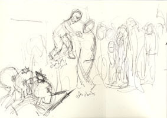
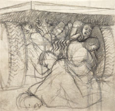
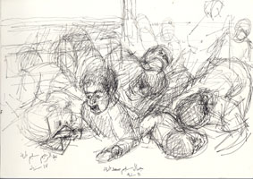

| Introduction |
| The Massacre |
| Northern Fields |
| Inside the Village |
| First Wave |
| Second Wave |
| Third Wave |
| Fourth Wave |
| Sixth |
| Seventh |
| Ninth |
| Roster of Victims |
| Witnesses |
| Artist's Notes |
| Contact me |
| Exit |
MEMORIAL on the 50th Anniversary of the Kafr Qasem Massacre
The Seventh Wave of the Massacre
Shortly after the end of the sixth wave, Atta Yacoub Abed Sarsour’s truck reached the spot of the massacre. It was carrying workers returning home from the quarries and fields of Petah Tikva. A foreman, Raja Hamdan Dahoud, his fellow workers and the two children joined the group in the truck on the way because they were nervous. Their nervousness was based on the disturbing news of the curfew brought by the children who were Riad, 8 year old, and Raja who was 11 years old.

Ten to fifteeen meters from the previous massacre one of the soldiers stopped the truck and ordered its passengers to descend and to form one line at the northern edge of the road in front of the truck. Raja did not want to allow his son Riyad to descend from the truck. But the child called to him. And at that very instant the order to “Harvest them” was given.

The seventeen victims began to pray, moan, run, or contort in pain. The scene was described by Abu Ayyoub.* Some ran down the road back to the plains and some into the fields. The soldiers continued shooting the wounded to make certain they were all dead. Ten were unable to escape the slaughter and were killed.**
Abu Ayyoub told me that many tried to escape the bullets under the truck. He himself squeezed his teenage body over the spare tire which was on a platform under the truck. One soldier pursued those under the truck and kept shooting untill all were killed except himself.
Abu Ayyoub froze in shock and fear even though he was untouched. He heard the soldiers talking, smoking, and laughing while resting their back on the truck he was under. He said that he could have reached out and touched them.
They found him under the truck the next morning. He was, at that point, catatonic, his body rigid, until one soldier pointed a gun at him. Suddenly, Abu Ayyoub jumped and wrapped himself around the soldier in a hug of fear and went rigid again in exactly this position. They could not pry him off of the Israeli soldier. When finally they took him home, he was unable to speak. His mother rubbed him down with ointments, wrapped him in blankets, and put him to bed.

Another witness, Abdalraheem Salime Tah who was wounded but escaped, gave the same description. Tah gave witness at the military court trial (court document No. 114-115) saying that the soldiers kept firing at the wounded until they made sure that they died.
This witness, Abdalraheem Salime Tah, was the brother of the martyred child Jamal Saleem Tah who had come with Riyad to inform Riyad’s father, Raja, of the impending curfew.
And Abdalraheem told that he was holding his brother Jamal’s hand when they were lined up with all the other workers. Then when they were fired upon, he and his brother both fell to the ground but remained un-injured. Jamal was terrified and called to his brother: “AbdelRaheem, I am alive! What has happened to you?” The soldiers heard him and shot the child dead and wounded Abdalraheem. Abdalraheem (Abu Yazen) said about his brother, "Jamal hugged my waist with all his ebbing might and died."***
Web posting and author: Samia A. Halaby, October 2006.
![[Art on the Net]](/images/artnet_button.gif)